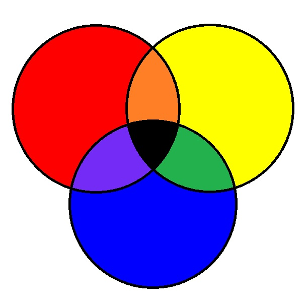
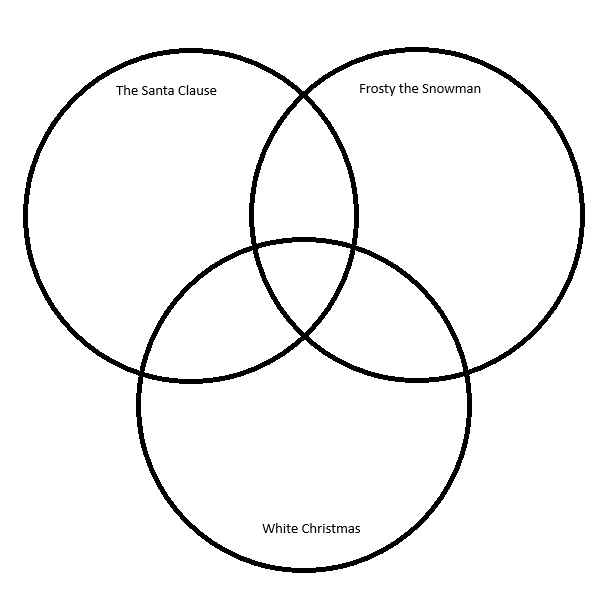
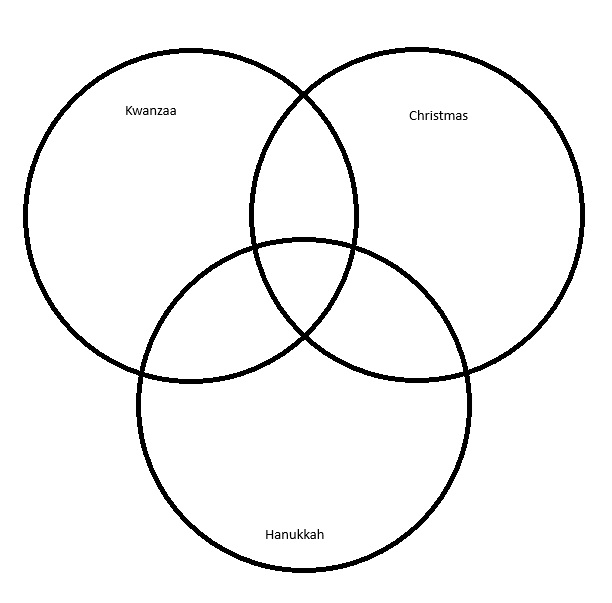
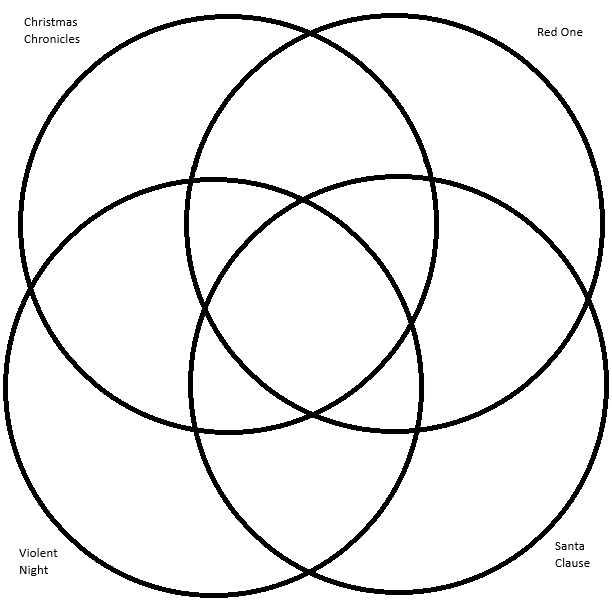

Here we have a more creative kind of puzzle. Venn diagrams are (usually) three overlapping circles used to show similarities between different things. Each circle is a category, and where the circles overlap go qualities or items that are shared between the categories.
The example above uses the colors Red, Blue, and Yellow, with secondary colors in the overlap and black in the middle. If this still isn't clear, let us know or google some more examples.


